15 Jul 2015
You probably already know it: any millisecond that end-users have to wait to
get their results drives us nuts. But what on Earth does this have to do with
Texas? Actually a lot!
You want your search to be instant? Let’s talk network…
When looking at the speed of search on a website or a mobile application, the
performance of the search engine is just one part of the equation. When you’re
using an extremely fast engine, network latency and saturated links quickly
become your biggest enemies: it simply takes time for the user query to reach
the engine and for the results to get back to the user’s browser.
In some cases, the round trip can easily take more than a second. In the US, it
can take up to 300ms to simply establish an SSL connection between the two
coasts. All this also applies to the communications between your backend and
the servers that host your search engine. The network can simply ruin the real
time experience you hoped to offer with your search engine.
A new US Central point of presence to reach a 25ms total delivery time across the US
A great search experience is to drive end-users towards what they’re looking
as quickly and seamlessly as possible. For us at Algolia it means to be able
to dynamically update the content displayed as the end-user is typing a query.
Being able to offer this find as-you-type experience obviously requires a very
performant search engine but it also requires to host the search engine itself
as close as possible to the end-user in order to tackle the network latency.
This is why we are adding this new US Central region to our existing twelve
regions. With the addition of the Dallas PoP, Algolia’s API is now accessible
from thirteen different regions including US (East, West and Central),
Australia, Brazil, Canada, France, Germany, Hong Kong, India, Japan, Russia,
and Singapore.
If your audience is spread out across multiple regions, you can use Algolia
from a combination of these regions to ensure minimal results delivery time
and optimal speed for all your users (Algolia’s Distributed Search Network
automatically routes user queries to your closest region).
This new US Central PoP, combined with Algolia’s US East and US West PoPs, now
allows to deliver search results across the US with less than 25 milliseconds of
latency. This guarantees a seamless find-as-you-type experience on websites and
mobile applications all across the US.

Getting closer to additional infrastructure providers
When you choose SaaS providers, especially when their service becomes a core
component of your product, you probably prefer the ones hosted close to where
you operate your backend, for latency and availability reasons. This is
actually why we initially started in the US by opening PoPs in Ashburn (VA)
and San Jose (CA), close to the AWS PoPs, which most of our customers rely on
today.
Our new presence in Texas allows services which rely for their backend on
local infrastructure providers such as Rackspace and Softlayer to also benefit
from the full power of Algolia. This new PoP offers them an extremely low
network latency between their backend and our API.
If you’re not already an Algolia user and you want to give it a try, simply
sign up for a 14 day trial and select
the US Central region in the process.
If you are already using Algolia and want to migrate to the US Central region,
simply drop us a line at support@algolia.com or
on the live chat.
If you’re none of the two above, we still think you’re awesome!
Cheers!
15 Jun 2015
It looked just like another page in the middle of the night. One of the
servers of our search API stopped processing the indexing jobs for an unknown
reason. Since we build systems in Algolia for high availability and
resiliency, nothing bad was happening. The new API calls were correctly
redirected to the rest of the healthy machines in the
cluster and the only impact on the service
was one woken-up engineer. It was time to find out what was going on.
UPDATE June 16:
A lot of
discussions
started pointing out that the issue is related to the newly introduced queued
TRIM. This is not correct. The TRIM on our drives is un-queued and the issue we
have found is not related to the latest changes in the Linux Kernel to disable
this feature.
UPDATE June 17:
We got contacted by Samsung and we provided them all the system specifications and all the information about the issue we had. We will continue to provide Samsung all the necessary information in order to resolve the issue.
UPDATE June 18:
We just had a conference call with the European branch and the Korean HQ of
Samsung. Their engineers are going to visit one of the datacenters we have
servers in and in cooperation with our server provider they will inspect the
mentioned SSDs in our SW and HW setup.
UPDATE June 19:
On Monday June 22, the engineering team from Samsung is going analyze one of our servers in Singapore and if nothing is found on-site, the server will travel to Samsung HQ in Korea for further analysis.
UPDATE July 13:
Since the last update of this blog-post, we have been in a cooperation with Samsung trying to help them find the issue, during this investigation we agreed with Samsung not to communicate until their approval.
As the issue was not reproduced on our server in Singapore, the reproduction
is now running under Samsung supervision in Korea, out of our environment.
Although Samsung requested multiple times an access to our software and
corrupted data, we could not provide it to them in order to protect the
privacy and data of our customers.
Samsung asked us to inform you about this:
- Samsung tried to duplicate the failure with the latest script provided to them, but no single failure has been reproduced so far.
- Samsung will do further tests, most likely from week 29 onwards, with a much more intensive script provided by Algolia.
After unsuccessful tries to reproduce the issue with Bash scripts we have
decided to help them by creating a small C++ program that simulates the
writing style and pattern of our application (no files are open with
O_DIRECT). We believe that if the issue is coming from a specific way we are
using the standard kernel calls, it might take a couple of days and terabytes
of data to be written to the drive.
We have been informed by Samsung that no issue of this kind have been reported
to them. Our server provider has modified their Ubuntu 14.04 images to disable
the fstrim cron in order to avoid this issue. For the last couple of months
after not using trim anymore we have not seen the issue again.
UPDATE July 17:
We have just finished a conference call with Samsung
considering the failure analysis of this issue. Samsung engineering team has
been able to successfully reproduce the issue with our latest provided binary.
- Samsung had a concrete conclusion that the issue is not related to Samsung SSD or Algolia software but is related to the Linux kernel.
- Samsung has developed a kernel patch to resolve this issue and the official statement with details will be released tomorrow, July 18 on Linux community with the Linux patch guide. Our testing code is available on GitHub.
This has been an amazing ride, thank you everyone for joining, we have arrived
at the destination.
The NGINX daemon serving all the HTTP(S) communication of
our API was up and ready to serve the search queries but the indexing process
crashed. Since the indexing process is guarded by
supervise, crashing in a loop
would have been understandable but a complete crash was not. As it turned out
the filesystem was in a read-only mode. All right, let’s assume it was a
cosmic ray :) the filesystem got fixed, files were restored from another
healthy server and everything looked fine again.
The next day another server ended with filesystem in read-only, two hours
after another one and then next hour another one. Something was going on.
After restoring the filesystem and the files, it was time for serious analysis
since this was not a one time thing. At this point, we did a breakdown of the
software involved in our storage stack and went through the recent changes.
Investigation & debugging time!
We first asked ourselves if it could be related to our software. Are we using
non-safe system calls or processing the data in an unsafe way? Did we
incorrectly read and write the files in the memory before flushing it to disk?
- Filesystem - Is there a bug in ext4? Can we access the memory space of allocation tables by accident?
- Mdraid - Is there a bug in mdadm? Did we use an improper configuration?
- Driver - Does the driver have a bug?
- SSD - Is the SSD dying? Or even worse, is there a problem with the firmware of the drive?
We even started to bet where the problem was and exactly proposed, in this
order, the possible solutions going from easy to super-hard.
Going through storage procedures of our software stack allowed us to set up
traps and in case the problem happens again, we would be able to better
isolate the corrupted parts. Looking at every single storage call of our
engine gave us enough confidence that the problem was not coming from the way
in which we manipulate the data. Unfortunately.
One hour later, another server was corrupted. This time we took it out of the
cluster and started to inspect it bit by bit. Before we fixed the filesystem,
we noticed that some pieces of our files were missing (zeroed) - file
modification date was unchanged, size was unchanged, just some parts were
filled with zeros. Small files were completely erased.
This was weird, so we started to think if it was possible that our application
could access certain portions of the memory where the OS/filesystem had
something mapped because otherwise our application cannot modify a file without
the filesystem noticing. Having our software written in C++ brought a lot of
crazy ideas of what happened. This turned out to be a dead-end as all of these
memory blocks were out of our reach.
So is there an issue in the ext4? Going through the kernel changelog looking
for ext4 related issues was a terrifying experience. In almost every version
we found a fixed bug that could theoretically impact us. I have to admit, I
slept better before reading the changelog.
We had kernels 3.2, 3.10, 3.13 and 3.16 distributed between the most often
corrupted machines and waited to see which of the mines blows up. All of them
did. Another dead-end. Maybe there was an issue in ext4 that no one else has
seen before? The chance that we were this “lucky” was quite low and we did not
want to end up in a situation like that. The possibility of a bug in ext4 was
still open but highly improbable.
What if there was an issue in mdadm? Looking at the changelog gave us
confidence that we should not go down this path.
The level of despair was reaching a critical level and the pages in the middle
of the night were unstoppable. We spent a big portion of two weeks just
isolating machines as quickly as possible and restoring them as quickly as
possible. The one thing we did was to implement a check in our software that
looked for empty blocks in the index files, even when they were not used, and
alerted us in advance.
Not a single day without corruptions
While more and more machines were dying, we had managed to automate the
restore procedure to a level we were comfortable with. At every failure, we
tried to look at different patterns of the corruption in hopes that we would
find the smallest common denominator. They all had the same characteristics.
But one thing started to be more and more clear - we saw the issue only on a
portion of our servers.
The software stack was identical but the hardware was slightly different. Mainly
the SSDs were different but they were all from the same manufacturer. This was
very alarming and led us to contact our server provider to ask if they have ever
seen something like this before. It’s hard to convince a technical support
person about a problem that you see only once in a while, with the latest
firmware and that you cannot reproduce on demand. We were not very successful
but at least we had one small victory on our side.
Knowing that the issue existed somewhere in the combination of the software
and drive itself, we reproduced the identical software stack from our servers
with different drives. And? Nothing, the corruption appeared again. So it was
quite safe to assume the problem was not in the software stack and was more
drive related. But what causes a block to change the content without the rest
of the system noticing? That would be a lot of rotten bits in a sequence…
The days started to become a routine - long shower, breakfast, restoring
corrupted servers, lunch, restoring corrupted servers, dinner, restoring
corrupted servers. Until one long morning shower full of thinking, “how big
was the sequence?” As it turned out, the lost data was always 512 bytes, which
is one block on the drive.
One step further, a block ends up to be full of zeroes. A hardware bug? Or is
the block zeroed? What can zero the block?
TRIM! Trim instructs the SSD
drive to zero the empty blocks. But these block were not empty and other types
of SSDs were not impacted. We gave it a try and disabled TRIM across all of our
servers. It would explain everything!
The next day not a single server was corrupted, two days silence, then a week.
The nightmare was over! At least we thought so… a month after we isolated the
problem, a server restarted and came up with corrupted data but only from the
small files - including certificates. Even improper shutdown cannot cause
this.
Poking around in the source code of the kernel looking for the trim related
code, we came to the trim blacklist. This blacklist configures a specific behavior for certain
SSD drives and identifies the drives based on the regexp of the model name.
Our working SSDs were explicitly allowed full operation of the TRIM but some
of the SSDs of our affected manufacturer were limited. Our affected drives did
not match any pattern so they were implicitly allowed full operation.
The complete picture
At this moment we finally got a complete picture of what was going on. The
system was issuing a TRIM to erase empty blocks, the command got
misinterpreted by the drive and the controller erased blocks it was not
supposed to. Therefore our files ended-up with 512 bytes of zeroes, files
smaller than 512 bytes were completely zeroed. When we were lucky enough, the
misbehaving TRIM hit the super-block of the filesystem and caused a
corruption.
After disabling the TRIM, the live big files were no longer
corrupted but the small files that were once mapped to the memory and never
changed since then had two states - correct content in the memory and
corrupted one on the drive. Running a check on the files found nothing because
they were never fetched again from the drive and just silently read from the
memory. Massive reboot of servers came into play to restore the data
consistency but after many weeks of hunting a ghost we came to the end.
As a result, we informed our server provider about the affected SSDs and they
informed the manufacturer. Our new deployments were switched to different SSD
drives and we don’t recommend anyone to use any SSD that is anyhow mentioned
in a bad way by the Linux kernel. Also be careful, even when you don’t enable
the TRIM explicitly, at least since Ubuntu 14.04 the explicit
FSTRIM runs in a cron
once per week on all partitions - the freeze of your storage for a couple of
seconds will be your smallest problem.
TL;DR
Broken SSDs: (Drives on which we have detected the issue)
Working SSDs: (Drives on which we have NOT detected the issue)
- Intel S3500
- Intel S3700
- Intel S3710
28 May 2015
You may have heard last week in the press,
Algolia has just raised an $18.3M Series A round of financing led by Accel
Partners! Philippe Botteri from Accel is joining our board and we can’t wait
to benefit from his experience! We are also excited to welcome Lead Edge
Capital and to have received the trust of industry pioneers such as Ilya
Sukhar of Parse, Solomon Hykes of Docker, Erik Swan of Splunk, and Kevin Rose
of Digg.
This funding represents a major milestone for Algolia. Thanks to the
commitment of our customers our growth last year enabled us to demonstrate a
strong product market fit. We are proud to count many of you as our customers
who have seen in our offer a way to deliver a better search experience,
improving their end-users’ engagement.
We want to change the way people interact with information. We don’t want
people to “search” in the traditional type-keyword/hit-enter/wait-for-results
/repeat-until-found-or-abandon way; we want them to intuitively access data.
We strongly believe that search should become a frontend and UX priority.
That’s why we focus so much on the two must-haves for building a seamless and
interactive experience: speed which enables updating results as-you-type, and
relevance which ensures that results are good even after only a couple of
keystrokes.
It’s time for us to accelerate on that vision. With the help of this new
funding, we are going to continue investing in our core product, and in making
it available to an ever-expanding community with many new integrations. Search
is everywhere and you can count on us to come up with new creative ways to
delight your users with an outstanding experience. Stay tuned!
We will also double down on customer success, which has been so important to
our growth. Please make us accountable and let us know if there is anything we
can improve.
We have embarked on a journey to change the face of user-facing search,
everywhere. Join us, it’s going to be fun!
PS: We’re hiring!
11 May 2015
At Algolia, we are obsessed with finding a way to have a 99.9999% available
architecture. On our way to achieve that, we have to make sure every piece of
the architecture can safely fail without affecting the service.
The first point of the architecture where a customer’s request starts to
interact with our service is not the router in the datacenter, but a DNS
resolving a domain name to the IP address “long time” before that. This piece
of architecture is very often overlooked and that is no surprise as you mostly
get best-effort DNS service automatically with your server.
Latency
For couple months we are a happy user of NSONE that
provides us with the first level of logic. We use NSONE for its superb
performance and data-driven DNS that gives us control in steering the traffic
of our Distributed Search Network to the proper
server - whether it means closest or simply available one. But as any other
network dependent service, there are factors outside of NSONE’s control that
can influence availability of its DNS resolves and consequently Algolia. BGP
routing is still a huge magic and “optimizations” of some ISPs are beyond
understanding. Well, they do not always make the optimizations in the
direction we would like to. For some services the change of DNS resolution
time from 10 to 500ms does not mean a lot but for us it is a deal breaker.
 Resolution of latency-1 via NSONE
Resolution of latency-1 via NSONE
DDoS
When we started to think about our DNS dependency, we remembered the 2014
DDoS attack on UltraDNS and the situation when there was not enough
#hugops for all the services impacted.
During the previous attack on UltraDNS in 2009 even
big names like Amazon and SalesForce got impacted.
Solution
In most of the cases it would mean adding another DNS name server from a
different provider and replicate the records. But not in ours. NSONE has some
unique features that we would have to give up and find a common feature subset
with a different provider. In the end we would have to serve a portion of DNS
resolutions via slower provider for no good reason.
Since we provide custom made API clients we have one more place where to put
additional logic. Now came a time to choose a resilient provider for our
secondary DNS and since we like AWS, Route53 was a clear choice. Route53 has
ok performance, many POPs around the world and API we already had integration
for.
In the last moment, one more paranoid idea came to us - let’s not rely on a
single TLD. No good reason
for that, it was just “what if…?” moment.
 Resolution of latency-1 via
Route53
Resolution of latency-1 via
Route53
Right now, all the latest versions of our API clients (detailed list below)
use multiple domain names. “algolia.net” is served by NSONE and provides all
the speed and intelligence, “algolianet.com” is served by Route53 in case that
for any reason contacting server via “algolia.net” fails. It brings more work
to our side, brings more cost on our side but it also brings better sleep for
our customers, their customers and us.
And now we can think what else can fail…
Minimal versions of API clients with support of multiple DNS:
06 May 2015
Algolia’s DNA is really about performance. We want our search engine to answer
relevant results as fast as possible.
To achieve the best end-to-end performance we’ve decided to go with JavaScript
since the total beginning of Algolia. Our end-users search using our REST API
directly from their browser - with JavaScript - without going through the
websites’ backends.
Our JavaScript & Node.js API clients were implemented 2 years ago and were now
lacking of all modern best practices:
- not following the error-first or callback-last conventions;
- inconsistent API between the Node.js and the browser implementations;
- no Promise support;
- Node.js module named algolia-search, browser module named algoliasearch;
- cannot use the same module in Node.js or the browser (obviously);
- browser module could not be used with browserify or webpack. It was exporting multiple properties directly in the window object.
This blog post is a summary of the three main challenges we faced while
modernizing our JavaScript client.
tl;dr;
Now the good news: we have a new isomorphic JavaScript API
client.
Isomorphic JavaScript apps are JavaScript applications that can run both
client-side and server-side.
The backend and frontend share the same code.
isomorphic.net
Here are the main features of this new API client:
If you were using our previous libraries, we have migration guides for both
Node.js and the
browser.
#
Challenge #1: testing
Before being able to merge the Node.js and browser module, we had to remember
how the current code is working. An easy way to understand what a code is
doing is to read the tests. Unfortunately, in the previous version of the
library, we had only one test. One test was
not enough to rewrite our library. Let’s go testing!
Unit? Integration?
When no tests are written on a library of ~1500+
LOC,
what are the tests you should write first?
Unit testing would be too close to the implementation. As we are going to
rewrite a lot of code later on, we better not go too far on this road right
now.
Here’s the flow of our JavaScript library when doing a search:
- initialize the library with
algoliasearch()
- call
index.search('something', callback)
- browser issue an HTTP request
callback(err, content)
From a testing point of view, this can be summarized as:
- input: method call
- output: HTTP request
Integration testing for a JavaScript library doing HTTP calls is interesting
but does not scale well.
Indeed, having to reach Algolia servers in each test would introduce a shared
testing state amongst developers and continuous integration. It would also
have a slow TDD feedback because of heavy network usage.
Our strategy for testing our JavaScript API client was to mock (do not run
away right now) the XMLHttpRequest object.
This allowed us to test our module as a black box, providing a good base for a
complete rewrite later on.
This is not unit testing nor integration testing, but in between. We also
planned in the coming weeks on doing a separate full integration testing suite
that will go from the browser to our servers.
faux-jax to the rescue
Two serious candidates showed up to help in testing HTTP request based
libraries
Unfortunately, none of them met all our requirements. Not to mention, the
AlgoliaSearch JavaScript client had a really smart failover request strategy:
This seems complex but we really want to be available and compatible with
every browser environment.
- Nock works by mocking calls to the Node.js http module, but we directly use the XMLHttpRequest object.
- Sinon.js was doing a good job but was lacking some XDomainRequest feature detections. Also it was really tied to Sinon.js.
As a result, we created algolia/faux-jax. It is now pretty stable and can mock XMLHttpRequest, XDomainRequest and
even http module from Node.js. It means faux-jax is an isomorphic HTTP
mock testing tool. It was not designed to be isomorphic. It was easy to add
the Node.js support thanks to moll/node-mitm.
Testing stack
The testing stack is composed of:
The fun part is done, now onto the tedious one: writing tests.
Spliting tests cases
We divided our tests in two categories:
- simple test cases: check that an API command will generate the corresponding HTTP call
- advanced tests: timeouts, keep-alive, JSONP, request strategy, DNS fallback, ..
Simple test cases
Simple test cases were written as table driven
tests:
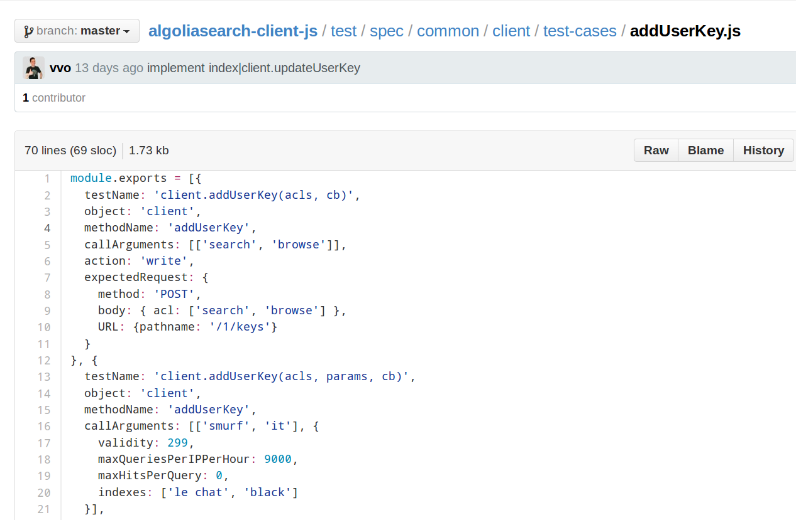 It’s a
simple JavaScript file, exporting test cases as an
array
Creating a testing stack that understands theses test-cases was some work. But
the reward was worth it: the TDD feedback loop is great. Adding a new feature
is easy: fire editor, add test, implement annnnnd done.
Advanced tests
Complex test cases like JSONP fallback, timeouts and errors, were handled in
separate, more advanced tests:
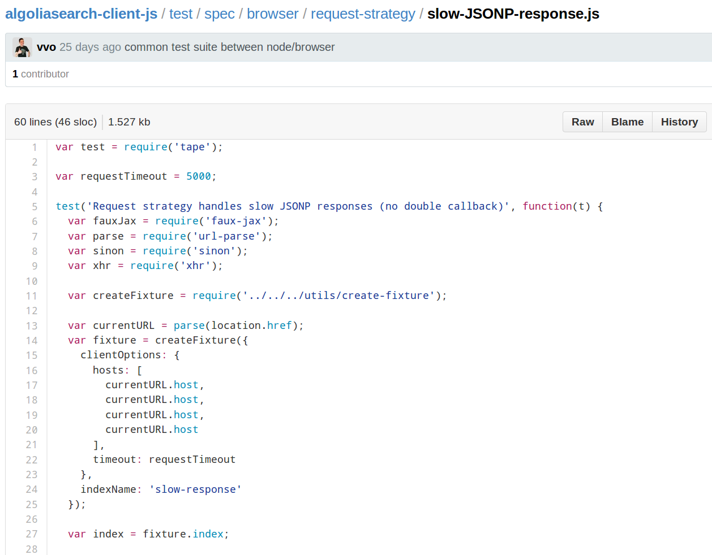 Here we test
that we are using JSONP when XHR fails
Testing workflow
To be able to run our tests we chose
defunctzombie/zuul.
Local development
For local development, we have an npm test task that will:
- launch the browser tests using phantomjs,
- run the Node.js tests,
- lint using eslint.
You can see the task in the
package.json. Once run it looks like this:
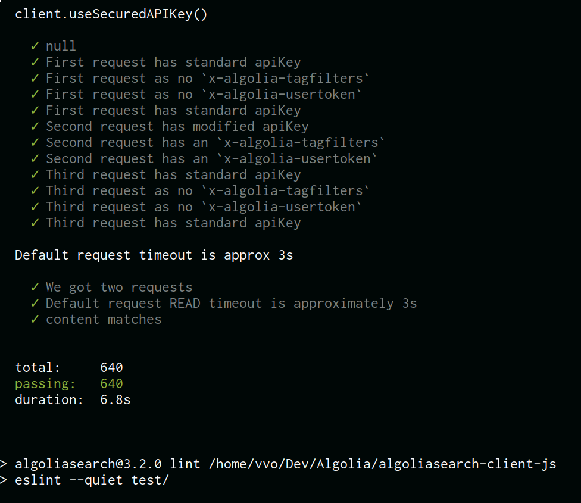 640 passing
assertions and counting!
But phantomjs is no real browser so it should not be the only answer to “Is my
module working in browsers?”. To solve this, we have an npm run
dev task that
will expose our tests in a simple web server accessible by any browser:
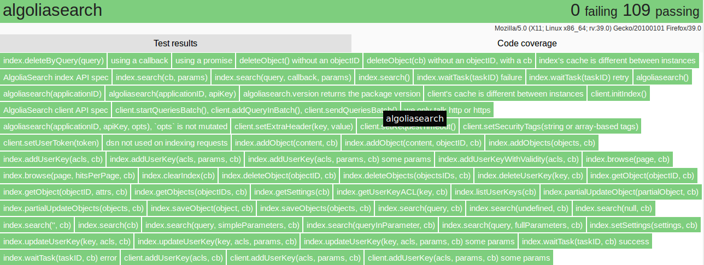 All of theses
features are provided by defunctzombie/zuul
Finally, if you have virtual machines, you can
test in any browser you want, all locally:
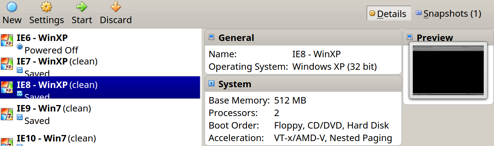 Here’s a
VirtualBox setup created with
xdissent/ievms
What comes next after setting up a good local development workflow? Continuous
integration setup!
Continuous integration
defunctzombie/zuul supports running
tests using Saucelabs browsers. Saucelabs provides
browsers as a service (manual testing or Selenium automation). It also has a
nice OSS plan called Opensauce. We patched
our .zuul.yml configuration file
to specify what browsers we want to test. You can find all the details in
zuul’s wiki.
Now there’s only one missing piece: Travis CI.
Travis runs our tests in all browsers defined in our .zuul.yml file. Our
travis.yml looks like this:
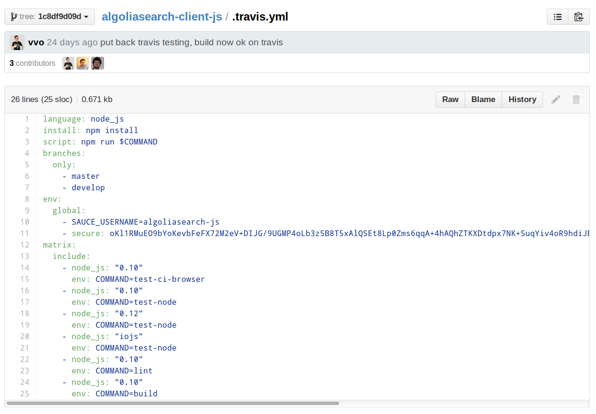
All platforms are tested using a travis build
matrix
Right now tests are taking a bit too long so we will soon split them between
desktop and mobile.
We also want to to tests on pull requests using only latest stable versions of
all browsers. So that it does not takes too long. As a reward, we get a nice
badge to display in our
Github readme:
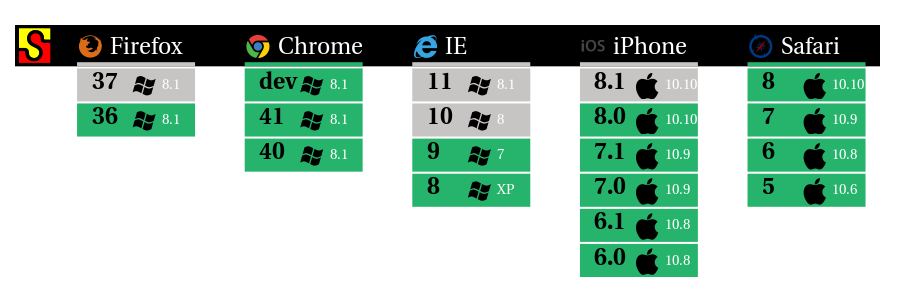 Gray color
means the test is currently running
Challenge #2: redesign and rewrite
Once we had a usable testing stack, we started our rewrite, the V3
milestone on Github.
Initialization
We dropped the new AlgoliaSearch() usage in favor of just
algoliasearch(). It allows us to hide implementation details to our API
users.
Before:
new AlgoliaSearch(applicationID, apiKey, opts);
After:
algoliasearch(applicationID, apiKey, opts);
Callback convention
Our JavaScript client now follows the error-
first and callback-last conventions. We had to break some methods to
do so.
Before:
client.method(param, callback, param, param);
After:
client.method(params, param, param, params, callback);
This allows our callback lovers to use libraries like
caolan/async very easily.
Promises and callbacks support
Promises are a great way to handle the asynchronous flow of your application.
Promise partisan? Callback connoisseur? My API now lets you switch between
the two! http://t.co/uPhej2yAwF (thanks
@NickColley!)
— pouchdb (@pouchdb) March 10,
2015
We implemented both promises and callbacks, it was nearly a no-brainer. In
every command, if you do not provide a callback, you get a Promise.
We use native promises in compatible
environments and
jakearchibald/es6-promise as
a polyfill.
AlgoliaSearchHelper removal
The main library was also previously exporting window.AlgoliaSearchHelper to
ease the development of awesome search UIs. We externalized this project and
it now has now has a new home at algolia/algoliasearch-helper-
js.
UMD
UMD: JavaScript modules that run anywhere
The previous version was directly exporting multiple properties in the
window object. As we wanted our new library to be easily compatible with a
broad range of module loaders, we made it UMD
compatible. It means our library can be used:
This was achieved by writing our code in a
CommonJS style and then use the
standalone build feature of browserify.
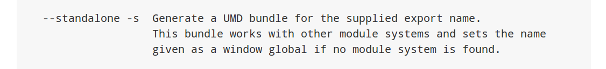 see
browserify usage
Multiple builds
Our JavaScript client isn’t only one build, we have multiple builds:
Previously this was all handled in the main JavaScript file, leading to unsafe
code like this:
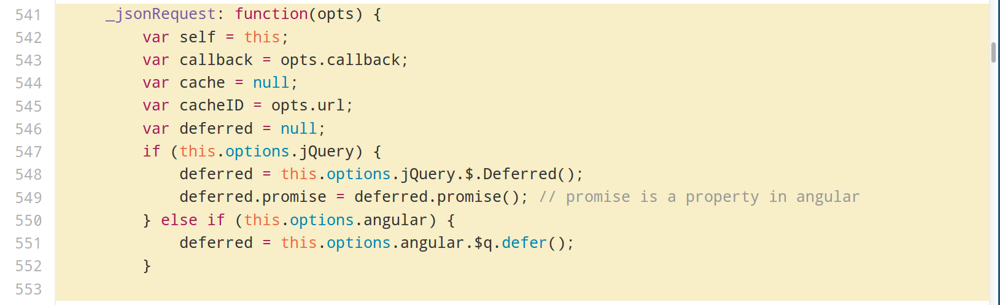
How do we solve this? Using inheritance! JavaScript prototypal inheritance is
the new code smell in 2015. For us it was a good way to share most of the code
between our builds. As a result every entry point of our builds are inheriting
from the src/AlgoliaSearch.js.
Every build then need to define how to:
Using a simple inheritance pattern we were able to solve a great challenge.
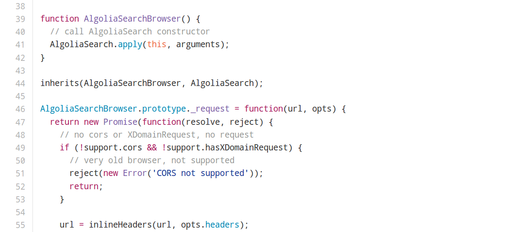 Example of
the vanilla JavaScript build
Finally, we have a build script that
will generate all the needed files for each environment.
Challenge #3: backward compatibility
We could not completely modernize our JavaScript clients while keeping a full
backward compatibility between versions. We had to break some of the previous
usages to level up our JavaScript stack.
But we also wanted to provide a good experience for our previous users when
they wanted to upgrade:
- we re-exported previous constructors like window.AlgoliaSearch*. But we now throw if it’s used
- we wrote a clear migration guide for our existing Node.js and JavaScript users
- we used npm deprecate on our previous Node.js module to inform our current user base that we moved to a new client
- we created legacy branches so that we can continue to push critical updates to previous versions when needed
Make it isomorphic!
Our final step was to make our JavaScript client work in both Node.js and the
browser.
Having separated the builds implementation helped us a lot, because the
Node.js build is a regular build only using the http module from Node.js.
Then we only had to tell module loaders to load index.js on the server and
src/browser/.. in browsers.
This last step was done by configuring browserify in our
package.json:
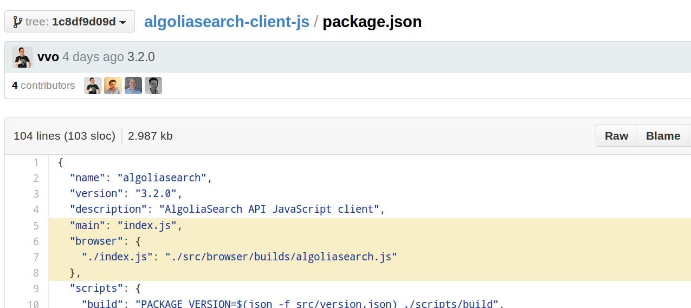 the browser
field from
browserify also works in webpack
If you are using the algoliasearch module with browserify or webpack, you
will get our browser implementation automatically.
The faux-jax library is released under MIT like all our open source
projects. Any feedback or improvement idea are welcome, we are dedicated to
make our JS client your best friend :)


{kind=link}
{kind=link}
{kind=link}
{kind=link}
{kind=link}
{kind=link}
{kind=link}
{kind=link}
{kind=link}
{kind=link}
{kind=link}